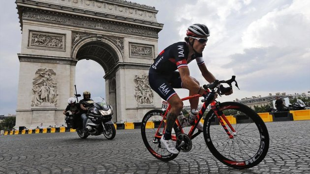
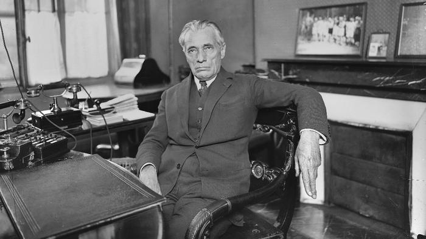
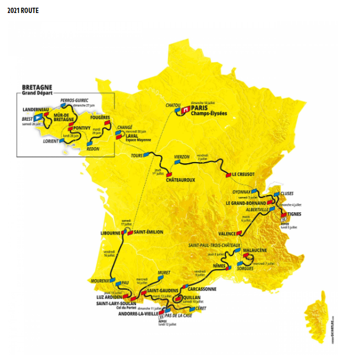

ТУР ДЕ ФРАНС 2021
Немного истории
Тур де Франс был создан благодаря ожесточенной конкуренции двух французских газет в конце XIX века — Le Velo и L'Auto. Продажи L'Auto падали, и ее инвесторы требовали от редакции решительных действий. В центре Парижа, в офисе газеты L'Auto, 20-го ноября 1902 года прошло заседание редакции. На повестке дня было обсуждение предложений по повышению продаж газеты. Последним из выступающих был 26-летний Жео Лефевр, журналист, курирующий велоспорт. Жео выступил с коротким докладом о том, что однодневные гонки являются очень эффективным инструментом продаж и предложил амбициозную идею провести гонку длиной в 6 дней, которая должна пройти по всем регионам Франции. Главный редактор газеты — Анри Дегранж, обладатель 12 мировых рекордов на велотреке, — не был уверен в успехе такой затеи, в то время как финансовому директору Виктору Годде она пришлась по душе. Годде пригласил Лефевра на ланч, чтобы познакомиться с идеей поближе, после которого все поверили в возможный успех гонки нового формата. Через пару месяцев, а именно 19 января 1903 года, L'Auto объявил о проведении первой в истории многодневки Тур де Франс.
Интересные факты о супер-многодневке Тур де Франс
- Жак Анкетиль, Бернар Ино, Мигель Индурайн и Эдди Меркс являются обладателями рекорда побед на Туре:каждый из них победил в общем зачете 5 раз.
- После дисквалификации Лэнса Армстронга гонка осталась без победителя с 1999 по 2005 годы, в протоколах остались просто пустые строчки.
- Всего 61 человек в истории велогонки выигрывали ее хотя бы один раз.
- Всего 2 гонщика не из Европы выигрывали Тур де Франс — Кедел Эванс (Австралия) и Грег Лемонд (США).
- Всего 4 гонщика лидировали на Тур де Франс с первого и до последнего этапа — Оттавио Боттекья в 1924-м, Николас Франц в 1928-м, Ромен Мас в 1935-м и Жак Анкетиль в 1961-м.
- Рекордсмен по количеству побед на отдельных этапах является все тот же Эдди Меркс, на его счету — 34 выигранных этапа, у Марка Кэвендиша пока 30, у Бернара Ино — 25.
- Больше всего дней в желтой майке лидера тоже у Меркса — 96, у Бернара Ино — 75, Мигель Индурайн 60 дней владел желтой майкой, у Криса Фрума таких дней пока 59.
- Семь раз «горным королем» становился француз Ришар Виранк, по шесть титулов у испанца Федерико Бахамонтеса и бельгийца Люсьена ван Импа.
- Немец Эрик Цабель и Петер Саган чаще других выигрывал зачет лучшего гонщика по очкам — 6 раз. В этом году Саган имеет прекрасный шанс стать единоличным лидером в истории этой номинации.
- Француз Сильван Шаванель — лидер по количеству стартов на «Большой Петле». В 2018 году он принял участие в гонке в 18-ый раз и завершил карьеру. По 17 раз на гонке стартовали австралиец Стюарт О'Грэди и немец Йенс Фохт.
- Представители Франции первенствовали в общем зачете 36 раз, но при этом последний раз это произошло в далеком 1985-м году. Бельгия выигрывала 18 раз, но последний раз еще раньше, аж в 1976-м!
- По общему количеству побед на этапах лидируют хозяева гонки, у них их 705, на втором месте — бельгийцы: 471 раз. Третья «полка» — у итальянцев: 268 раз.
- Самой высокой точкой маршрута в 2019 будет подъем на Коль-де-л'Изеран (2770 метров) в рамках 19-го этапа. Гонщику, который первым поднимется на эту гору, дадут специальный приз имени Анри Дегранжа, – того самого главного редактора, который в 1902 году скептически отнесся к идее проведения гонки.
Карта «Тур де Франс 2021»
В этом году гонщики выйдут на старт в 108-й раз. Начнется веломарафон 26-го июня, а завершится 18-го июля. Нынешнее издание «Тура» пройдет на территории Франции и Андорры, в которую пелотон заглянет на 15-м и 16-м этапах.
Участники поднимутся на 60 официальных подъемов, в том числе пять подъемов высшей, 13 первой и девять подъемов второй категории.
Структура маршрута
- общая протяженность всех этапов: 3383 километра, средняя протяженность всех групповых этапов – 175 км;
- две индивидуальные гонки с раздельным стартом общей протяженностью – 58,0 км;
- восемь равнинных этапов;
- пять холмистых/среднегорных этапов;
- шесть высокогорных этапов (три из них с финишем на вершине подъема)